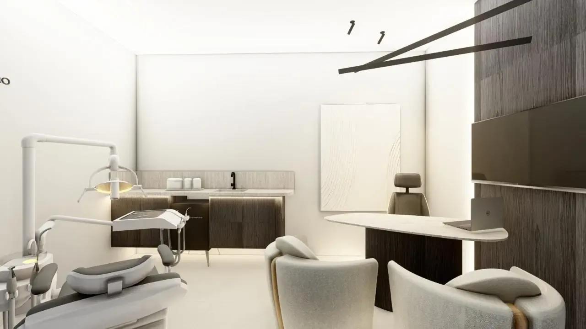
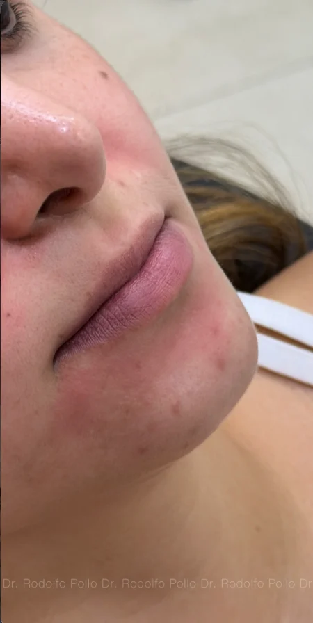
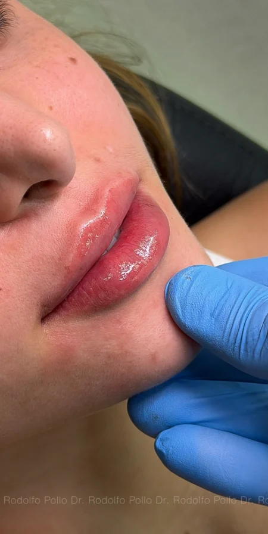
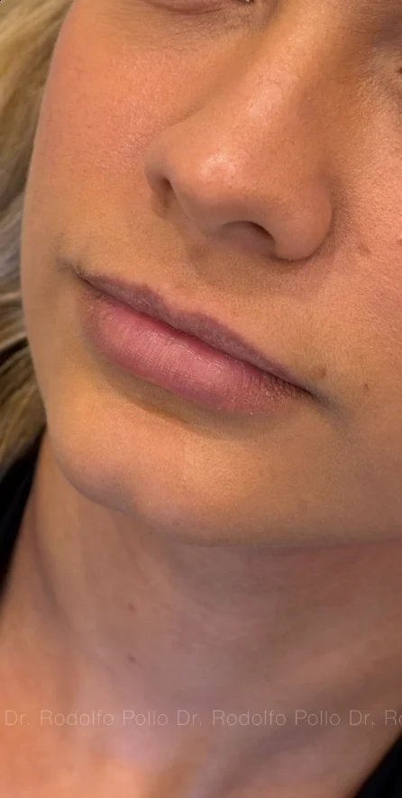
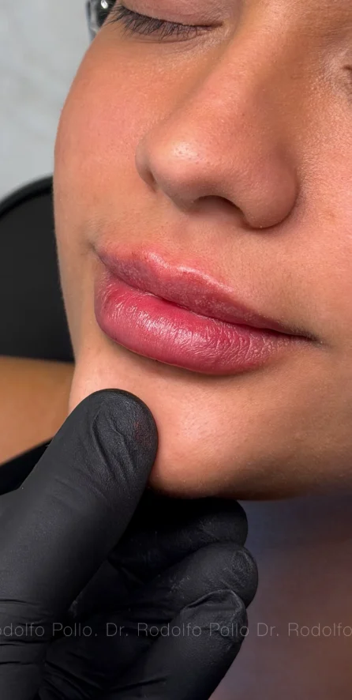
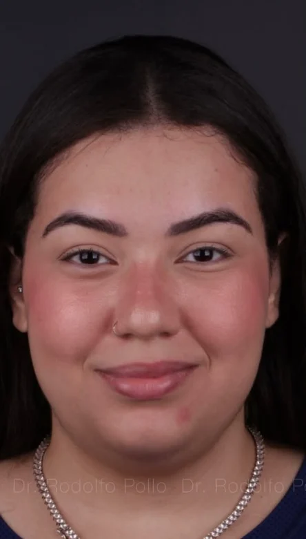
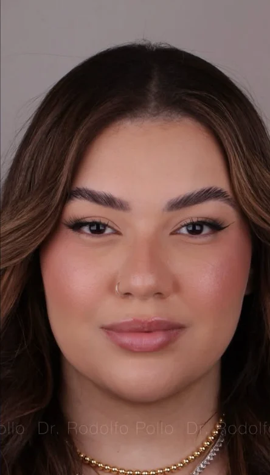
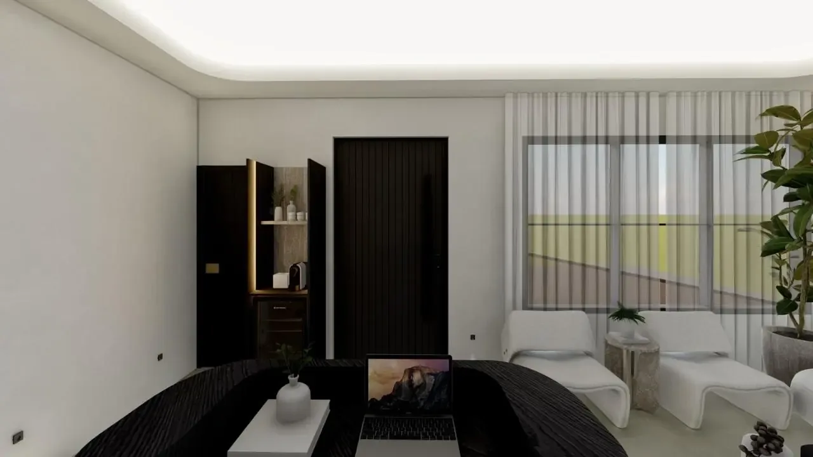
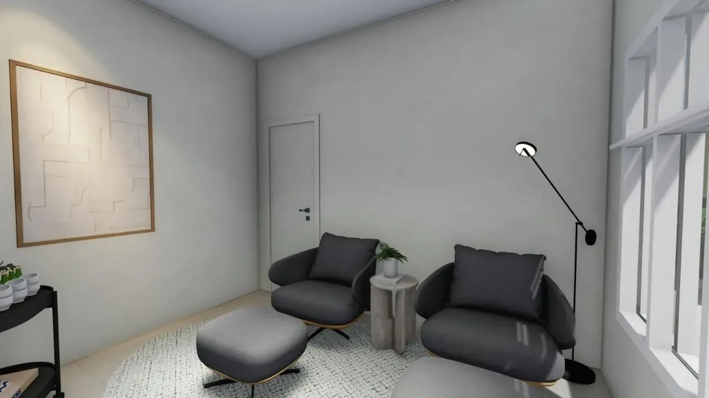

Bucomaxilofacial
Fernandópolis
Dr. Rodolfo Pollo, cirurgião bucomaxilofacial em Fernandópolis. Clínica Dr. Rodolfo Pollo
Agendar avaliação · (17) 99618-6070O cirurgião
Função e estética da face
Dr. Rodolfo Pollo, cirurgião bucomaxilofacial
Atende na Clínica Pollo, na Av. dos Arnaldos, 693, no centro de Fernandópolis.
CROSP 133619
CRORS 33109
Tratamentos
- Cirurgia bucomaxilofacial
Cirurgias da boca, dos maxilares e da face.
- Harmonização orofacial
Procedimentos estéticos da face, planejados caso a caso.
- Preenchimento labial
Volume e contorno dos lábios.
O consultório da Clínica Pollo

Consultório · imagem do projeto arquitetônico
Resultados
Antes e depois
Dr. Rodolfo Pollo · CROSP 133619
Os resultados variam de pessoa para pessoa.
-
Lábios

Antes 
Depois -
Lábios

Antes 
Depois -
Face

Antes 
Depois
A clínica
No centro de Fernandópolis


Imagens do projeto arquitetônico
Agende a sua avaliação
(17) 99618-6070
Av. dos Arnaldos, 693 · Centro · Fernandópolis, SP